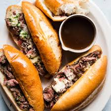

The Almighty French Dip Recipe

Ah yes. The amazing french dip. Woever had the bright idea to use the au jous you create while making the sandwich as part of the dish deserves all the recognition in the world. This simple addition turns an already incredible roast beef and cheese sandwich into a transential experience like no other. The time to make this dish is well worth the wait, and whoever you make this for will be happy they went to your house for dinner.
INGREDIENTS:
- 1.5 pounds skirt or flank steak
- 4 6" french or hoagie rolls, sliced in half diagonally
- 6 tablespoons butter, softenend
- 2 cups grated gruyere or swiss cheese
- (Optional) minced parsley for garnish
- Salt and pepper to taste
- 4 cups beef stock
- 1/4 teaspoon dried thyme
- 1 teaspoon salt
- 1 teaspoon sherry wine
- 1 tablespoon Worcestershire
- 2 teaspoons garlic powder
- 2 teaspoons onion powder
STEPS:
- Heat a large cast iron skillet over high heat. Generously salt and pepper the steak and sear it until it reaches medium rare, depending on thickness about 3 minutes each side. Let the steak rest for 5 minutes. Slice the steak into strips, as thin as possible against the grain and set aside.
- In a medium sized saucepan set over medium heat, whisk the beef stock, dried thyme, salt, sherry, Worcestershire, garlic and onion powder, until fully combined. Simmer for 5 minutes.
- Butter the inside of each of the french or hoagie rolls and sprinkle with garlic powser and place them open faced on a rimmed baking sheet.
- Turn the oven broiler on medium. Quickly dip the strips of steak into the broth and place them in even amounts onto one side of each roll. Sprinkle 1/3 cup cheese on each sandwich and arrange them open face on the baking sheet.
- Place the baking sheet under the broiler until cheese begins to melt, watching carefully for about 2 minutes. Remove from oven and sprinkle with parsley if desired.
- In small cocottes or ramekins ladle 3/4 cup serving of au jus into each container. Serve au jus with the warm sandwich and enjoy!